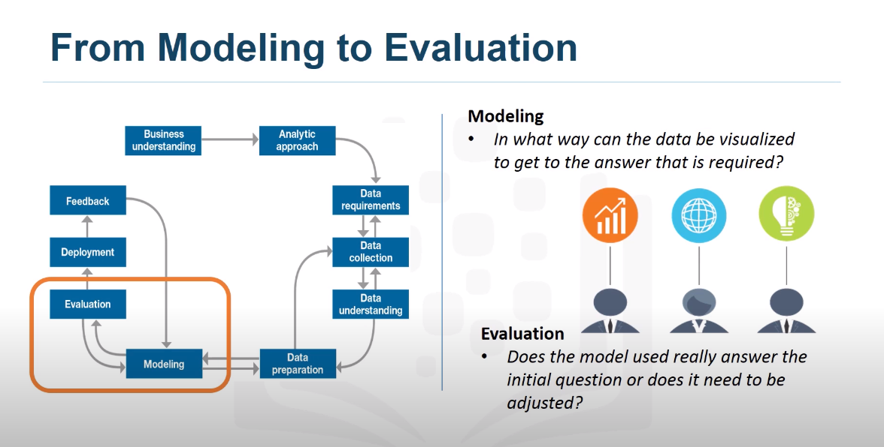

Defining Data Science
What is Data Science?
Data Science is a field of study where you use a lot of data and ask yourself a set of questions about that data, so you start making some hypoteshis and assumptions, then with a set of tools like models, algorithms you can start dig into your data verifying if your assumptions were correct or not.
There are many paths to data science, since the term is some new, because it is started to be used on later 2010, before that people just call it statistics, we can start a data science carreer no matter what our technical background is or hard background we got in the past , everything is related with data. But the real thing is, what are you going to do with the data if you are curious and start questioning about the data you got, you are in the right way, because being in that position is where you start to know more your data and star sharpening your hard skills in data-science.
A good advice to start with yout data-science career is to be curious, argumentative and judgemental. Also you must be able to tell a good story from your data, you need to tell everybody what you found, if you can not tell a story with your data, all the discoverys you can have made, it will be buried, no one will know everything you found ant that is a sad ending.
What is the cloud?
Cloud is a godsend tool to data-scientis because we are allowued to do more stuff with the data, not only for our purposes but for sharing that data with a lot of people of differents places in th world we can work on the same data without being in the same place or even in the same computer or machine. Also with cloud we are able to deploy some algorithms and models with large datasets that in other cases we can not even start because of terms in speed, storage, etc. So cloud is a very good tool for us in those aspects.
What do data science people do?
A day in the life of a data science person
We can start analyzing our data and be sure that our dataset is complete and maybe we can not find our solution in our data, but not always the solution would be in front of our eyes, maybe we need to watch other sides and think out of the box to try to improve our assumptions and then make new hypoteshis and models that try to solve our problem.
Data Science tools and technology
As data scientist we got a lot of tools we can use to analyze our data, some of them are more fancy than others, some of them help in a better way thant others, but at the end of the day, they are just tool, you are the master, you are the person who choose which tools is the best for each situations, and we have a lot of tools, for example, Linear Regression, polynomial regression, data visualization, machine learning algorithms, aritificial neural network, k-nearest neighbor, etc.
Data Science in Bussines
How should companies get started in Data Science
I think the most importat thing when a company start to solve a problem with data science are the data, the data is the most important thing before any algorithm or data science approach, without data and data collected in a meaningful way we can not do much, because it exist a say thay says, Garbage In Garbage Out, if the data the company collected is not the best or bias, the analysis we can make with that data is going to be also byas because we try to build a model with the data.
Recruiting for data science
When companies start to recruiting employees as Data-Scientist they are focused more on the soft-skills than the hard-skills because hard-skills could be teached and learn by the participant, but soft skills like curiosity, sense of humour, storytelling are things you can not teach them, because that are inner qualities each person have, so in finally a company is hiring people that have social skills develop in a way they can relate something more than techinal things with the data they gave them.
The ultimate purpose of analytics is to communicate findings to the concerned who might use these insights to formulate policy or strategy.The data scientist should then use the insights to build the narrative to communicate the findings.
Use Cases for Data Science
Applications of Data Science
Data Science has applications nearly in avery aspect of the life that is because we can collect data for any aspect we can think, but there are some technologies that are new which are driving data science to new horizons, that is the case for augmented reality, medical health, retail, finance and other fields where the need to be the best brings with it the ability to keep getting better and better over the time. But we need to be aware of our models, no matter what or how accurate our model is we can not rely 100% in those models, we oftenly have false positives, cases where the prediction does not work at all. An we need to be also aware of that because at the same time we do thinkgs correct, there going to be cases when things does not work, and that´s ok, because models are not predicting the future, we are trying to insight what is more probable in the future based on past data.
Final Reading First Course
Establishing Data Mining Goals
The first step in data mining is to set up goals for the exercise. We must identify the key question that need to be answered. Also we need to determine the level of accuracy and usefulness of the results obtained from data mining.
Selecting Data
The ouput of a data mining largely depends upon the quality of data being used.At times data are ready availabe for further processing. On the other hand, data may not be readily available for data mining . In such cases you must identify other resources of data or even plan new data collection initiatives. Therefore, identifying the right kind of data needed for data mining that could answer the question at reasonable costs is critical.
Preprocessing Data
Often raw data are messy, containing erroneous or irrelevant data. In addition, even with relevant data, information is sometimes missing. In the preprocessing stage, you identify the irrelevant attributes of data and expunge such attributes from further considerations. At the same time identifying the erroneuos aspects of the data and flagging them as such is necessary. Lastly, you must develop a formal method of dealing with missing data and determine wheter the data are missing randomly and systematically.
If the data were missing randomly, a simple set of solutions would suffice. However , when data are missing in a systematic way, you must determine the impact of missig data on the results.
Transforming Data
The next step, is to determine the appropiate format in which data must be stored. An important consideration in data mining is to reduce the number of attributes needed to explain the phenomena. This may require transforming data. Data reduction algorithms, such as Principal component Analysis, can reduce the number of attributes without a significant loss in information. In addition, variables may need to be transformed to help explain the phenomenon being studied.
Often you need to transform variables from one type to another. It may be prudent to transform the continous variable for income into a categorial variable were each record in the database is identified as low,medium and high-income individual. This could help capture the non-linearities in the underlying behaviours.
Storing Data
The transformed data must be stored in a format that makes it conducive for data mining. The data must be stored in a format that gives unrestricted and immediate read/write privileges to the data scientist. During data mining, new variables are created, which are written back to the original database, which is why the data storage scheme should facilitate efficiently reading from writting to the database. It is also important to store data on server or storage media that keeps the data secure and also prevents the data mining algorithm from unnecesarily searching for pieces of data scattere on different server or storage media. Data safety and privacy should be a prime concern for storing data.
Mining Data
After data is appropriately processed, tranformed and stored, it is subject to data mining. This step covers data analysis methods, including parametric and non-parametric methods, and machine-learning algorithms. A good starting for data mining is data visualization. Multidimensional views of the data using the advanced graphing capabilities of data mining softwares are very helpful in developing a preliminary understanding of the trends hidden in the data set.
Evualating Minin Results
After results have been extracted from data mining, you do a formal evaluation of the results. Formal evaluation could include testing the predictive capabilities of the models on observed data to see how effective and efficient and algorithm have been reproducing data. This is known as in-sample forecast In Addition, the results are shared with the key stakeholders for feedback, which is then incorporated in the later iterations of data mining to improve the process.
Data mining and evaluatin the results become an iterative process such that the analyst use better and improve algorithms to improve the quality of results generated in light of the feedback received from the stakeholders.
Data Science Methodology


From problem to approach
Bussines Understanding
When we face a problem we need to start understading the bussines problem, asking ourself questions like "What is the problem that you are trying to solve" and "How can you use data to answer the question?"
Case Study
Before even to collect data, the goal and objectives needed to be defined.
- Goal: To provide quality care without increasing costs
- Objective: To review the process to identify inefficiencies
After spending time on the things defined above, ibm team prioritized "patient readmissions" as an effective area of review.

After reviewing some records, it was discovered that the patients with congestive heart failure were are top of the readmission list.
Finally four bussines requirements were identified for whatever model would be built.
- Predict CHF readmission outcome(Y or N) for each patient.
- Predict the readmission risk for each patient
- Understand explicitly what combination of events led to the predicted outcome for each patient
- Easy to understand and apply to new patients to predict their readmission risk
Analytic Approach
Once we have defined our bussines requirements, we face the a lot of tools to use, so we can select our analytic approach based on type of questions as below:

Also there are types of questions that could drive our analytical approach for example if we are facing a problem where we need to determine probabilities we can use a predictive model, to observer relationship a descriptive model, yes/no questions a classification model.
Machine learning will be used to identify relationship and trends in data that might be non identify easily.

Case Study
For this problem, IBM group choose a tree classification model to identify combination of conditions leading to each patient´s outcome From this information the analyst can obtain the readmission risk, or the likelihood of a yes for each patient.
From Requeriments to Collection
Data Requirements
Thinks of this section as data science methodology as cooking with data. Each step is critical in making the
meal.
Data Scientist needs to identify: which ingredients are required, how to source and collect them, how to
understand or work
with them, and how to prepare the data to meet the desired outcome.
Case Study
Working on the same case study we follow the next step, data requirements, since we are working with a tree classifier model, we need to prepare our data in advance to fullfill this model, so the first step is to select the cohort or the group that is to be studied. That cohort needs to be representative to the problem, including all the aspects talked in the problem definition, for this case our cohort is based on the next qualities.
Once we have select our cohort, we start defining the characteristics or the data relevant to each row or record, in this case, we need all the information relevant to the patient during this CHF diagnosis.
Data Collection
Once an initial data collection is made, a followed stage made by a data scientist is to get a first insight of the data collected, looking if the data is worthy to the problem or if we need more data in other aspect to completely fullfill the model.
Case Study
In our case study, we need to define where we are going to collect our data, we can obtain data from different sources, for example, Corporate data warehouse, record system, claim payment system, etc. Of course there will be data that we wanted but is not available, in this case the best option is try to estimate the impact on the results, and then try to substitute in some way or discard it.

Other important step in data collection is "mergin data", it common to obtain data redundant that makes heavier our model, algorithms and databases, so we need to work within other teams trying to eliminate this redundant data and get the best database or data possible of our problem.
From Understanding to Preparation
Data Understanding
Data Understanding encompasses all activities related to constructing the data set. Essentially, the data understanding section of the data science methodology answers the question: Is the data that you collected representative of the problem to be solved?
Case Study
In our case study, we begin to doing some statistics to review our data, univariable statistics from the
variables that we
are going to use in our model, such as mean, meadian, min, max, standard deviation, second pairwise
correlation were used,
to see how closely certain variables were related, and which ones, if any, were very highly correlated,
meaning that they
would be Essentially redundant, thus making one only relevant for modeling.
Third, histograms of the variables were examined to understand their distribution. Histograms are a good way
to understand how
values or a variable are distributed, and which sort of data preparation would be needed to make the variables
more useful in a model.
For example, for a categorical variable that has too many distinct values to be informative in a model, the
histogram would help them decide
how to consolidate those values. The univariates, statistics, and histograms are also used to asess data
quality.
Finally, this process is iterative, more we work with the data and more we learned we could redefine and refine our data collection to get more meaningful data to our model.
Data Preparation - Concepts
Is one of the more time consuming stages in a data science project.
Is the process of getting the data into a state where it may be easier to work with. The data preparation stage of methodology answers the question: What are the ways in which data is prepared?. To work with the data, it must be prepared in a way that adresses missing or invalid valued and removes duplicates, towards ensuring that everything is properly formatted.

Data Preparation - Case Study
First, the set of diagnosis related group codes
needed to be identified, as congestive heart
failure implies certain kinds of fluid buildups.
We also needed to consider that congestive heart
failure is only one type of heart failure.
Clinical guidance was needed to get the right codes
for congestive heart failure.
 The next step involved defining the re-admission criteria
for the same condition. The timing of events needed to
be evaluated in order to define wether a particular
congestive heart failure admission was an initial
event, which is called an index admission, or a
congestive heart failure-related readmission.
The next step involved defining the re-admission criteria
for the same condition. The timing of events needed to
be evaluated in order to define wether a particular
congestive heart failure admission was an initial
event, which is called an index admission, or a
congestive heart failure-related readmission.
Based on clinical expertise, a time period of 30 days
was set as the window for readmission relevant for
congestive heart failure patients, following the
discharge from the initial admission.
Next, the records that were in transactional format
were aggregated, meaning that the data included
multiple records for each patient. Transactional records
included professional provider facility claims submitted
for physicians, laboratory, hospital, and clinical
services. Also included were records describing all the
diagnoses, procedures, prescriptions and other information
about in-patients and out-patients.
A given patient could easily have hundreds or even thousand
of these records, depending on their clinical history. Then
, all the transactional records were aggregated to
the patient level, yielding a single record for each
patient, as required for the decision tree classification
method that would be used for modeling.
As part of the aggregation process, many new columns were
created representing the information in the transactions.
For example, frecuency and most recent visits to doctors,
clinics and hospitals with diagnoses, procedures prescriptions
and so forth.
Co-morbidities with congestive heart failure were also considered,
such as diabetis, hypertension and many other diseases
and chronic conditions that could impact the risk of
re-admission for congestive heart failure.
 During discussions around data preparation, a literature
review on congestive heart failure was also undertaken
to see wheter any important elements were overlooked,
such as co-morbidities that had not yet been accounted
for.
During discussions around data preparation, a literature
review on congestive heart failure was also undertaken
to see wheter any important elements were overlooked,
such as co-morbidities that had not yet been accounted
for.
The literature review involved looping back to the data
collection stage to add a few more indicators for procedures
and conditions.
 Aggregating the transactional data at the patient level,
meant merging it with the other patient data, including
their demographic information, such as age, gender, type
of insurance, and so forth.
Aggregating the transactional data at the patient level,
meant merging it with the other patient data, including
their demographic information, such as age, gender, type
of insurance, and so forth.
The results was the creation of one table containing a single
record per patient, with many columns representing the
attributes about the patient in his or her clinical history.
 These columns would be used as variables in the predictive
modeling. Here is a list of variables that were ultimately
used in building the model.
These columns would be used as variables in the predictive
modeling. Here is a list of variables that were ultimately
used in building the model.
The dependent variable, or target, was congestive heart
failure readmission within 30 days following discharge
from a hospitalization for congestive heart failure,
with an outcome of either yes or no.
The data preparation stage resulted in a cohort of 2343
patients meeting all of the criteria for this case study.
The cohort was then split into training and testing sets
for building and validating the model, respectively
From Modeling to Evaluation
Modeling Concepts
Modelling is the stage in the data science methodology where the data scientist has the chance to sample the sauce and determine if it´s bang on ir in need for more seasoning. This portion is geared to answer two questions: First: What is the purpose of data modelling, and second, what are some characteristics of this process?
Data modelling focuses on developing models that are either descriptive or predictive. An example of a descriptive model might examine things like: if a person did this, then they are likely to prefer that. A predictive model tries to yield yes/no, or stop/go type outcomes.These models are based on the analytic approach that was taken, either statically driven or machine learning driven.
Data Scientist also split the data into two groups, the training set and the test set, the training set is used as its name says to train the model or differents algorithms and the test set determine how accurate or effective our algorithm is. We also need to be aware of overfitting our model or giving it few data that in uncapable to get the behaviour we need.
The data compilation, preparation and modelling is succeded when we understand deeply three things, starting with understanding the question at hand, then selecting the correct analytic approach or method to solve the problem and finally obtain, understand, and model the data.
After all the steps were done, we need to answers ourselves if we are good enough with our model, it corresponds to the reality? it is near and relevant to the cases we expect? we need to tweak it more to be more accurate? we need to collect more data for its corrects building? We hope all these questions were affirmatively correct and go through the next step.
Case Study
In our caste study in the congestive heart failure readmission, we are looking for patients with high-risk readmission, so the outcome of interest will be congestive heart failure equals "yes". In this first model, overall accuracy in clasifying the yes and no outcomes was 85%. This sounds good, but it represents only 45% of the "yes". The actual readmission are correctly classified, meaning that the model is not very accurate.
The question then becomes: How could the accuracy of the model be improved in predecting the yes outcome?. For
decision tree
classification, the best parameter to adjust is the relative cost of missclasified yes or no outcomes.
When a true, non-readmission is missclasified, and action taken is to reduce that patient´s risk, the cost of
that error
is the wasted intervention. A statistician call this a false-positive. But when a true readmission is
missclasified, and no action
is no taken to reduce that risk, than the cost of that error is the readmission and all its attended costs,
plus the trauma to the patient, this
is a false-negative . So we can see the cost of both missclassification errors can be quite different. For
this reason, it is
reasonable to adjust the relative weights of missclasifying the yes and no outcomes. The default is 1-1, but
the decision tree algorithm,
allows setting of a higher value for a yes. For the second model the relative cost was set at 9:1.
This is a very high ratio, but gives more insight to the model´s behaviour. This time the model correctly
classified the 97%
of the yes, but at the expense of a very low accuracy on the no, with an overall accuracy of only 49%. The
problem with this
outcome is the large number of false-positives, which would recommend unnecesary and costly intervention for
patients, who
would not have been re-admitted anyway.
Therefore, the data-scientist needs to try again to find a better balance between the yes and no accuracies.
For the third model,
the relative cost was set at a more reasonable 4-to-1. This time a 68% accuracy was obtained only in yes,
called sensivity by statistician,
and 85% accuracy on the no, called specificity, with an overall accuracy of 81%. This is the best balance that
can be obtained with a
rather small training set trough adjusting the relative cost of missclasified yes and no outcomes parameters.
A lot more work goes into the modeling, including iterating back to the data preparation stage to redefine
some of other variables
, so as to better represent the underlygin information, and thereby improve the model.
Evaluation
A model evaluation goes hand-in-hand with model building, such as the evalutaion and modeling stages are donde
iteratively.
Model evaluation is performed during model development and before the model is deployed. Evaluation allows the
quality of the model
to be assessed but it is also an opportunity to see if it meets the initial request. Evaluation answers the
question: Does the Model
used really answer the initial question or does it need to be adjusted?
Model evaluation can have two main phases: The first is the diagnostic measures phase, which is ensured the
model is working as intended.
If the model is a predictive model, a decision tree can be used to evaluate if the answers the model can
ouput, is aligned to the initial design.
It can be used to see where there are areas that require adjustments. If the model is a descriptive model, one
in which relationships
are being assessed, then a testing set with unknown outcomes can be applied, and the model can be refined as
needed.
The second fase of the evaluation that may be used is statistical significance testing. This type of
evaluation can be applied to the model
to ensure that the data is being properly handle and interpreted within the model. This is designed to avoid
unnecesary second
guessing when the answer is revealed.
Case Study
One way to find the optimal model through a diagnostic measured based on tuning one of the parameters in model building. Specifically we will see how to tune the relative cost of missclasifying yes and no outcomes.
As shown in the table 4 models were built, with diffferents relative cost to yes and no outcomes. As wee see each model increases the true-positive rate of the accuracy of predicting yes, at the expense of accuracy in predicting no, that is an increasing false-positive rate. The question to be made is: which of this model is the best based on tuning this parameter?.
There is a curve called "ROC Curve" that is a diagnostic tool for classification model evaluation. So the optimal model is the one giving the maximum separation between the relative ROC curve relative to the red base line. We can see that model 3 with a relative cost at 4-to-1 is giving the maximum separation so this is the optimal model.
From Deployment to Feedback
Deployment
While a data science model will provide an answer, the key to making the answer relevant and useful involves getting the stakeholder familir with the tool produce.
Once the model is evaluated and the data scientist is confident it will work, it is deployed and put to the ultimate test. Depending on the model it will be putted into a test scenario or public to people.
Case Study
The first step was to assimiliate the knowledge for the bussines group who would be designing and managing the invertion program to reduce readmission risk, in this scenario, the bussines people translated the model results so that the clinical staff could understand how to identify high-risk patient and design suitable intervention actions. The goal, of course, was to reduce the likelihoodt that these patients would be readmitted within a month after discharge.
During the bussiness requirements stage, the intervention program director and her team had wanted an
application that would
provided automated, near real-time risk assesments of congestive heart failure, it also has to be easy to use
by the clinical staff
and preferably through browser-based application on a tablet. This patient data was generated througout the
hospital stay. It would be
prepared automatically prepared in a format needed by the model and each patient would be scored near the time
of discharge.
Clinicians most have the most up-to-date risk assesments for each patient, helping them to select which
patients to target for intervention
after discharge.
As part of solution of deployment, the intervention team would develop and deliver training for the clinical staff. Also processes and tracking and monitoring patients receiving the intervention would have to be develop in collaboration wit IT developers and database administrators so that results could go through the feedback stage and the model could be refine over time.
One example of deployment application was the cognos application where shows state where diabetes has more risk in juveniles.
Feedback
Once in play, feedback from the users will help to refine the model and assess it for performance and impact. The value of the model will be dependent on succesfully incorporating feedback and making adjustments for long as the solutions requires.
Throghout the data science methodology, each step sets the stage for the next, making the methodoly cyclical, ensures refinement at each stage in the game. The feedback process is rooted in the notion that, the more you know, the more that you will want to know

Case Study
Course Summary
We start forming a concrete bussines or research problem, to collecting and analyzing data, building a model, and understanding the feedback after the deployment.
We also learned methodical ways of working with the data, Specifically determining the data requirements, collecting the data, understanding the data, and then preparing the data for modeling.
We also learned how to model the data by using the appropiate analytics approach, based on the data requirements and the problem that you were trying to solve.
Language of Data Science
Languages of Data Science
When starting on Data Science there are many languages to start with, selecting one of them depends on many
aspects,
what is the problem you are solving, how old is the application, base language for a company, etc. You dont
need to master
all of them, but knowing you can use them there would be easier to swap to another language if the case
needed.
Python, R, and SQL maybe be the principals or the first progamming languages we must learn in our Data Science
Journey, python
because its facility in working with science applications and learning, R for statistics and, SQL for working
with the data. Also
there are other programming languages that we can use for data science, for example, Scala, Java, C++, Julia,
JavaScript, php, Go, Ruby
There are many roles we can aspire in Data Science:
- Busyness Analyst
- Database Engineer
- Data Analyst
- Data Engineer
- Data Scientist
- Research Scientist
- Software Engineer
- Statistician
- Product Manager
- Project Manager
Introduction to Python
Python is a powerhouse language, is by far the most popular language in data science, python is a good for those people whos already know how to programm, also for the new ones who want to learn because of the huge community and documentation available nearly 80% of data proffesiona used it. Python is also heavily used in Data Science, IA, and machine learning, web development, Internet of Things with devices like Raspberry Pi.
Python is great to used because it is a general purpose language, so it has a huge amount of libraries to use
with,
we can use libraries to work with, databases, automation, web scrapping, text processing, image processing,
machine learning
and data analytics.
For Data Science we have come computing libraries like: Numpy, Pandas, SciPy, and MatplotLib.
For Artificial intelligence it has Pytorch, TensorFlow, Keras, and Scikit-Learn
Python also can be used for Natural Language processing (NLP) using the Natural Language toolkit (NLTK)
Introduction to R
We start this introduction by saying R is a free software while Python is a open source project, they are
similar but no equal.
-
Similiarties:
- Both commonly refers to the same set of licenses
- Both support collaboration
- In many cases these terms can be used interchangeably
- Open Source Iniative (OSI) champions open source while the Free Software Foundations (FSF) defines Free Software
- Open Source is more bussines focused while Free Software is more focused on a set of values
Differences:
The array-oriented syntax make it easier to translate from math to code.
Most folks learn R few years later started their jorney in Data Science, but they also says that R is a good starting programming language for data science with those who does not have programming background before.
R is mostly used in academia, but there are also some companies who work with R, include IBM, Facebook, Google, Microsoft, etc.
R is a great programming language becase it has the biggest statistical repository in the world, also R has over 15000 publicly released packages to work with complex exploratory data analysis.
R integrates well with other programming languages like python, Java, .Net, C++, etc. And have some operations like matrix multiplications work out of the box.
Finally R has stronger object-oriented programming facilities than most statistical computing languages.
Introduction to SQL
SQL is a different programming language that Python and R and it is because is a non-procedural language. SQL
means
Structured Query Language an it is useful to handle structured data, data incorporating relations amongs
entities and variables.
SQL was designed for mananing data in relational databses.
A relational database is formed by collections of two-dimensional tables;
for example,datasets and Microsoft Excel Spreadsheets.
The SQL language is subdivided into several language elements, incluiding clauses, expressions,
predicates, queries, and statements.
What makes SQL great is that it helps you to obtain
jobs as business and data analyst and is a must in data
engineering and data science. When performing operations
with SQL the data is accessed directly (without any need to copy it
beforehand). This cand considerably speed up workflow executions.
SQL is the interpreter between you and the database.
There are many SQL databases available, including MySQL, IBM Db2,
PostgresSQL, Apache, SQlite and more.
Other Languages
Languages like Scala, Java, C++ and Julia are the most popular after
python, R and SQL.
Java is tried an true general purpose object oriented programming language.
Huge adoption in the enterprise space, designed to be fast and scalable.
Scala is a general purpose programming language that provides supoprt for functional programming.
C++ is a general purpose language, improve processing speed, enables system programming, and
gives you broader control over the application.
JavaScript core techonology for the world wide web. Is a a general purpose
language that extended beyond the browser with Node.js and other server side approaches.
Tensorflow is possible in Javascript.
Julia was designed at MIT for high-performance numerical
analysis and computational science.
Same speedy development like python or R while producing programs that runs
as fast as C or Fortran programs would.
Is a young language with a lot promise in Data Science future.
Categories of Data Science Tools
Apache Prediction IO, currently only supports Apache spark ML models for deployment,Seldon is an interesting product since it supports nearly every framework, including TensorFlow, Spark ML, R, and scikit-learn. Seldon can run on top of kubernetes and Redhat Openshift, MLeap is another way to deply sparkML. Finally TensorFlow can serve any of its model using the tensorflow service you can deploy even in smartphones, Raspberry PI and also in the web. IBM SPSS Collaboration is one tool availabe for this stage in a commercial enviroment.
ModelDB, is is a machine model metadatabase where information about the models are stored and can be queried, it supports Spark ML pipelines and scikit-learn, Prometheus, is a generic and multi-purpose tool used for machine learning model monitoring, although is not mainly created for this purpose. IBM Fairness 360, is a tool that detects and mitigates against bias in machine learning model. Machine learning models are susceptible to suffered attacks, the IBM Adversarial Toolbox can be used to detect vulnerabilities to adversarial attacks and help make the model more robust. Finally IBM AI Explainability 360 is a toolkit that makes the machine learning process more understandable by finding similar examples with a dataset that can be represented to a user for manual comparison. It can also illustrate training for a simple machine learning model by explaining how the differents inputs variables affect the final decision.
Jupyter is the most widely used IDE to work with data Science, it first emerged as a tool of interactive python programming, it nows supports more than a hundred differents programming languages trough kernels, A key property of Jupyter Notebooks is the ability to unify documentation, code, output from the code, shell commands, and visualizations into a single document. Jupyter Lab is the next generation of Jupyter Notebook and in the long term it would be replaced.
The well known cluster-computing framework Apache Spark is among the most active Apache projects and is used across all industries, including in many Fortune 500 companies. The Key property of Spark is the linear scalability.
Apache Spark is a batch data process engine, capable of processing huge amounts of data file by file. Apache Flink is a stream processing image, with is main focus on processing real-time data streams.
Libraries for Data Science
Libraries are a collection of functions and methods that enable you to perform a wide variety of actions
without writing
the code yourself.
- Pandas
- - Data Structures and tools for effective data cleaning, manipulation and analysis
- Numpy
- - Are based on arrays, enabling you to apply mathematical functions to these arrays.
- MatplotLib
- - The most well-known library for data visualization, and its excellent for making graphs and plots
- SeaBorn
- - Is based on matplotlib, makes it easy to generate plots like heat maps, time series, and violin plots.
- Scikit-Learn
- - Machine learning, regression classification, clustering and others
- Keras
- - Deep Learning Neural Networks
- TensorFlow
- - Deep Learning, production and deployment
- PyTorch
- - Deep Learning, regression, classification
- Apache Spark
- - Is a general purpose cluster-computing framework that enables you to process data using compute clusters. It has similar functionalities as Pandas, Numpy, and Scikit-Learn. Data Processing jobs can use Python, R, Scala, or SQL.
Application Programming Interfaces (API)
An API lets two pieces of software talk to each other. You use the API to communicate with the other software components. You dont have to know how the API works, you just need to know there are inputs and outputs.
They enable you to communicate using the internet, taking advantage of storage, greater data access, artificial intelligence
algorithms, and many other resources.
Representational State Transfer API. The API communicates with a web service that you call through
the internet.
HTTP methods are a way of transmitting data over the internet, We tell the REST APIs what to do by sending a request.
The request is usually communicated through an HTTP message.
The HTTP message usually contains a JSON file, which contains instructions for the operation that we would like the service
to perform.